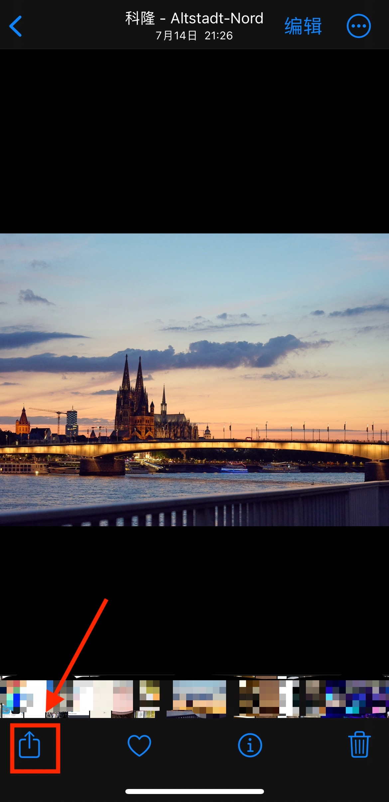

This shortcut code that can be used directly without downloading any app and support iPhone, iPad and Mac.
Features
Support to add the logo watermark of major camera manufacturers: Hasselblad, Leica, Sony, Nikon, Canon, Fujifilm, Panasonic etc.
Displays shooting equipment and lens models based on picture information via EXIF.
Fully customizable display of corresponding shooting parameters
Automatically or manually add geographic locations
Open source, it will not upload your pictures. The networking function is only used to parse GPS coordinates to cities and check if the shortcut has a new version.
This shortcut is completely free to use, if you feel that it is helpful to you or want to support the author to constantly update the subsequent version, welcome to support me via Buy me a sausage.
Open the Shortcuts app on your iPhone, iPad or Mac and tap on the center of the MH Watermark icon to run it, being careful not to tap on the three dot edit button in the upper right corner.
Click on the center area of the icon, do not click on the modify button with the three dots in the upper right corner
If you accidentally click on the three dots to enter the modification screen, you can also run the shortcut by clicking on the play button in the lower right corner.
Methode 2
Select the image you want to add a watermark to, then click the share button and select MH Watermark that’s it!

Select the image you want to add a watermark to, then click the `share button` and select `MH Watermark`